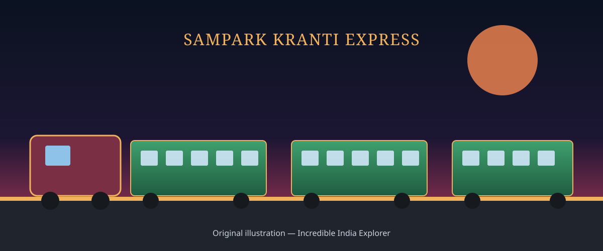

TRAINS OF INDIA
Sampark Kranti Express
Superfast, fully-reserved trains built to connect India's state capitals and major cities directly with New Delhi.
Explore Services
About Sampark Kranti Express
"Sampark Kranti" translates roughly from Hindi as "contact revolution" — a fitting name for a category of superfast trains designed to give state capitals and major cities a direct, fully-reserved link to New Delhi, without relying on connecting services or slower mail and passenger trains.
Unlike premium services such as Rajdhani or Duronto, Sampark Kranti trains typically carry a mix of coach classes — from Sleeper Class through AC 3-Tier and AC 2-Tier — making superfast connectivity accessible to a wide range of passengers on a single train.
History & Development
From a connectivity initiative to a nationwide network radiating from the capital.
Major Sampark Kranti Services
A sample of notable Sampark Kranti Express services connecting state capitals to New Delhi.
Routes & Connectivity
Important stations and regions linked by the Sampark Kranti network.
Passenger Experience
What to expect on board a Sampark Kranti Express service.
Regional Significance
Sampark Kranti services fill a specific gap in Indian Railways' network: fast, fully-reserved, direct connectivity between a state's political and economic centre and the national capital. For state governments, business travellers, and residents alike, this direct link shortens journeys that would otherwise require a change of trains or a much slower mail/express service.
By radiating outward from New Delhi to state capitals such as Bengaluru, Chennai, Thiruvananthapuram, Bhopal and Jammu Tawi, the network also reinforces administrative and economic ties between India's states and the centre, and gives passengers from those regions a reliable, superfast option for travel to Delhi.